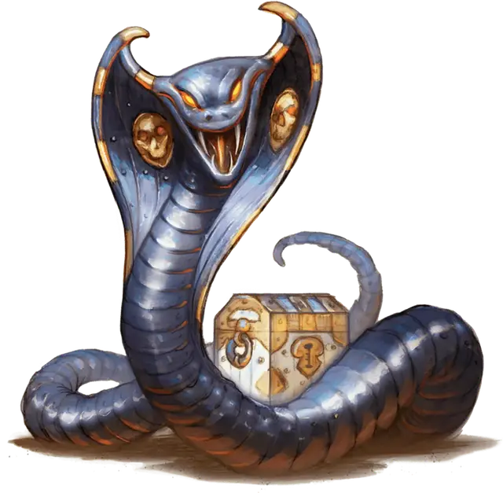

Заводная железная кобра
Clockwork Iron Cobra
Средний Конструкт, без мировоззрения

Класс Доспеха 13
Хиты 91 (14к8 + 28)
Скорость 30 футов
| мод | спас | ||
|---|---|---|---|
| СИЛ | 12 | +1 | +1 |
| ЛОВ | 16 | +3 | +3 |
| ТЕЛ | 14 | +2 | +2 |
| мод | спас | ||
|---|---|---|---|
| ИНТ | 3 | −4 | −4 |
| МДР | 10 | +0 | +0 |
| ХАР | 1 | −5 | −5 |
Навыки Скрытность +7
Иммунитет к урону яд
Иммунитет к состояниям окаменение, отравление, паралич, очарование, испуг, истощение
Чувства тёмное зрение 60 футов, пассивное Восприятие 10
Опасность 4 (1100 опыта)
Бонус мастерства +2
Среда обитания Горы, Лес, Луг, Холмы
Особенности
Языки. Понимает один языка своего создателя, но не говорит
Сопротивление магии. Железная кобра совершает с преимуществом спасброски от заклинаний и прочих магических эффектов.
Необычная природа. Железная кобра не нуждается в воздухе, питье, еде и сне.
Индивидуальный дизайн. Заводной механизм можно настроить, добавив одно из следующих улучшений или потенциальных уязвимостей в его блок статистики. Вы можете определить их случайно или выбрать пару модификаций соответствующих характеру создателя механизма.
Модификации Заводных Механизмов.
| к10 | Модификации |
| 1 | Камуфляж. Заводной механизм получает владение навыком Скрытность, если ещё не владеет им. Когда он не двигается - он не отличим от выключенной машины. |
| 2 | Сенсоры. Дальность тёмного зрения механизма увеличивается до 60 футов, если не была выше. Он получает владение навыком Восприятие, если ещё не имеет его. |
| 3 | Улучшенный доспех. КД заводного механизма повышается на 2. |
| 4 | Увеличенная скорость. Скорость заводного механизма увеличивается на 10 футов |
| 5 | Укреплённая конструкция. Заводной механизм получает сопротивление урону силовым полем, электричеством и звуком. |
| 6 | Самовосстановление. Если заводной механизм начинает свой ход хотя бы с одним хитом, он восстанавливает 5 хитов. Если он получал урон электричеством, эта способность не сработает в начале следующего хода. |
| 7 | Прочный каркас. Максимальное значение хитов заводного механизма увеличивается на число равное числу его Костей Хитов. |
| 8 | Присоски. Заводной механизм получает скорость лазания 30 футов. |
| 9 | Вокальный резонатор. Заводной механизм приобретает возможность говорить на ломанном Общем или Гномьем (по выбору создателя). |
| 10 | Водные двигатели. Заводной механизм получает скорость плавания 30 футов. |
Неисправности Заводных Механизмов.
| к8 | Неисправность |
| 1 | Неисправные сенсоры. Бросайте к6 в начале каждого хода заводного механизма. Если выпадает "1", механизм становится ослеплённым до конца этого хода. |
| 2 | Сбитый прицел. Бросайте к6 в начале каждого хода заводного механизма. Если выпадает "1", механизм совершает броски атаки с помехой до конца этого хода. |
| 3 | Плохое заземление. Заводной механизм получает уязвимость урону электричеством. |
| 4 | Закольцованная память. Бросайте к6 в начале каждого хода заводного механизма. Если выпадает "1", механизм принимает одно из существ в пределах 30 футов за своего создателя. Механизм не будет атаковать его в течении 1 минуты или до тех пор, пока существо не нападёт на него. |
| 5 | Ограниченное передвижение. Заводной механизм может передвигаться только по прямой. Он может повернуться на 90 градусов до начала своего движения и ещё один раз в середине. Он может свободно вращаться на месте, если двигался в свой ход. |
| 6 | Программа самосохранения. Если хиты заводного механизма составляют половину от максимума или ниже, в начале его хода бросайте к6. Если выпадает "1", механизм сбегает из боя. Если отступление невозможно - продолжает сражаться. |
| 7 | Перегрев. Бросайте к6 в начале каждого хода заводного механизма. Если выпадает "1", механизм недееспособен до конца своего хода. |
| 8 | Ржавые шестерни. Заводной механизм совершает с помехой броски инициативы, а его скорость снижена на 10 футов. |
Действия
Укус. Рукопашная атака оружием: +5 к попаданию, досягаемость 5 футов, одна цель. Попадание: 6 (1к6 + 3) колющего урона. Если цель существо, она должна преуспеть в спасброске Телосложения Сл 13 или получить один из случайных эффектов яда (бросьте к6):
• 1-2: Смятение. В свой следующий ход цель должна совершить одну атаку оружием против случайного существа, которое она может видеть в 30 футов от себя, используя любое оружие, которое у неё есть и передвигаясь, если требуется войти в досягаемость. Если оружия нет - цель совершает безоружный удар. Если в 30 футов нет существ, цель должна использовать действие Рывок, двигаясь к ближайшему существу.
• 3-4: Паралич. Цель становится парализованной до конца своего следующего хода.
• 5-6: Яд. Цель получает 13 (3к8) урона ядом.
Описание
Заводные механизмы
Усилия гномов, работающих с магическими и механическими вещами, порождают множество неудачных Конструктов, но иногда случаются воистину гениальные изобретения, такие как заводные механизмы.
С момента своего открытия, секреты производства заводных механизмов среди гномов переходят из поколения в поколение.
Железная кобра
Железная кобра полностью соответствует своему названию: металлическая змея с ядовитыми клыками. Кроме обычного яда, гномы заряжают этот заводной механизм алхимическими зельями, способными парализовать существ или поселить панику в их разум.